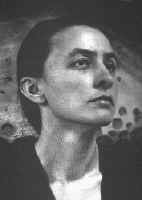
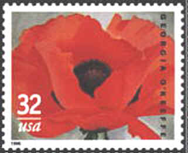
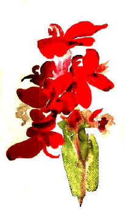
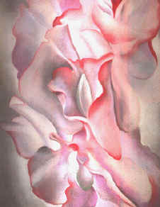
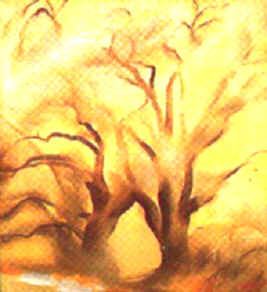
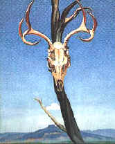
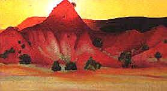
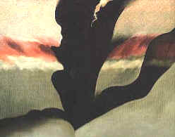
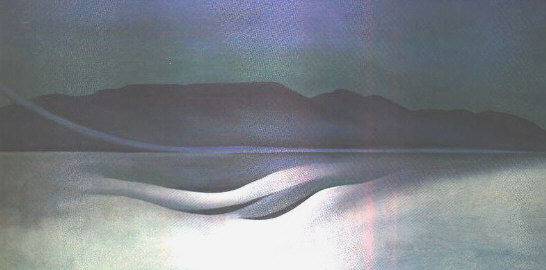
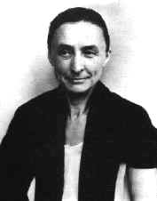

|
 |
Georgia O'Keeffe
1887 - 1986
(To Georgia)
|
 |
A page by
Ann-Mette Heindorff †, DK
It is a particular pleasure for me to
contribute this page also to PASIC
(Paintings and Arts on Stamps Internet Club), as a tribute to modern
American art in opposition to the classical arts being prevalent on
PASIC's pages.
In spite of the fact that Georgia
O'Keeffe is widely considered by critics and art historians to be one of
the most important American artists of the 20th century, the USPS up to
now only issued one stamp featuring one of her well-known flower
paintings. The stamp is shown immediately above, top right, and was
issued in 1996, ten years after her death. The title of the art work
is "Red Poppy".
Instead of displaying colourful stamps I
would therefore like to show a selection of her paintings, hoping that you
will like them as much as I do. Please point your mouse to the
images for additional information.
|
 |
Her active career began in
the 1910s and continued into the late 1970s, but the paintings for
which she is most well known today were completed from the
mid-1920s through the 1940s. These works are characterized by
subject matter that has become instantly associated with O'Keeffe
- flowers, bones, and New Mexico landscapes. In 1916, however,
when her work was first exhibited by Alfred Stieglitz (1864-1946)
- and whom she later married - whose innovations in photography
and early support of modern art in America are well know, it was
not as obviously dependent on imagery derived from the natural
world. O'Keeffe had received instruction in drawing and
painting as a child in Wisconsin, and by 1915 she had attended
classes at the School of The Art Institute of Chicago, the Art
Students League in New York, and Teachers College, Columbia
University. In that hear, however, she consciously rejected
aspects of her formal training in order to make personal
experience the subject of her
art. |
Georgia O'Keeffe mastered all medias
available; watercolour, pastel, oil. Her early works are mostly
watercolour or pastels, and are considered school works. Only her late
works are painted in oil, with which one can really make wonders in fading
out or emphasizing colours so that they come as close to nature as
possible.
|
 |
 |
The above work "Red Canna" is a
watercolour belonging to the Art Gallery of Yale University.
Together with the two works in pastel and oil respectively, all of an
almost organic appearance, they display her talents perfectly in
different media of totally different nature.
|
 |
 |
 |
The painting to the left juxtaposes two
forms that O'Keeffe came to know well in New Mexico: An animal skull that
she probably found in the desert and the Pedernal, the flat-topped
mountain that dominates the view to the south from her Ghost Ranch
house.
The brilliant colours found in landscape
forms (middle) near O'Keeffe's Ghost Ranch house in New Mexico inspired
many of her paintings of the 1940s.
O'Keeffe was fascinated by an area of
grey black landscape forms in the Navajo country (right) of northwestern
New Mexico that she discovered in the 1940s and made it the subject of at
least twelve paintings.

This page can be concluded by
nothing else than a painting from Ms. O'Keeffe's much beloved Lake
George, whose solitude and wild nature she depicted on numerous
paintings throughout her
life.
|
Sources:
-
Barbara Buhler Lynes
(Rizzoli Art Series): Georgia O'Keeffe
-
Jack Cowart & Juan
Hamilton (National Gallery of Art,
Washington):
Georgia O'Keeffe, Art and
Letters
-
Charles C. Eldridge
(Smithsonian Institution): Georgia
O'Keeffe
|
 |
Personally I would be more
than pleased to see one or more of Ms. O'Keeffe's paintings of which the
clear colours and nearly graphic nature are so well fit for being
reproduced in small format on stamps. Let's hope that the
USPS-officials will visit this page and have inspiration for future stamp
issues.
Note: this page, written for this site, initially appeared under the pseudonym George Kringelbach. Published by permission of the author.
|
First published: Nov. 2000. Revised: Jan. 2014
Copyright � 2000-2014 by A.M. Heindorff, DK
This version: Copyright © 2000-2014 by Victor
Manta, Switzerland.
All rights
reserved worldwide. |

Click the banner to visit the
site
|